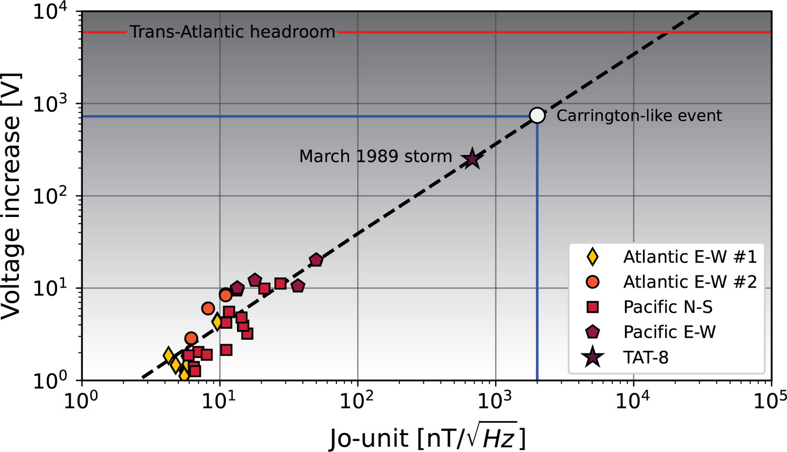
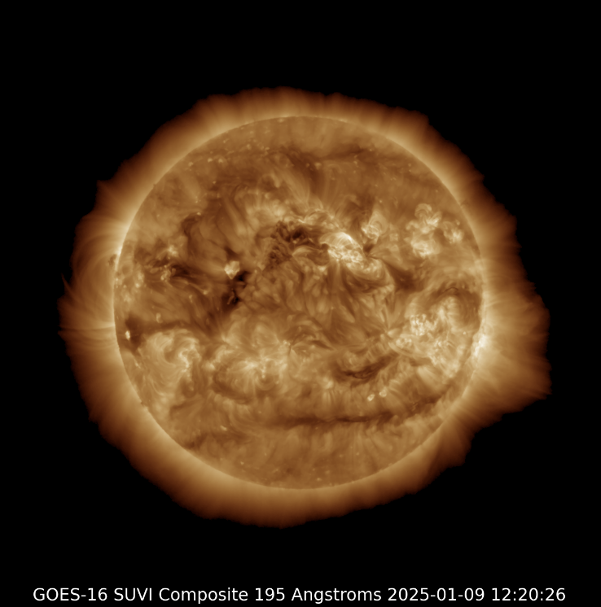
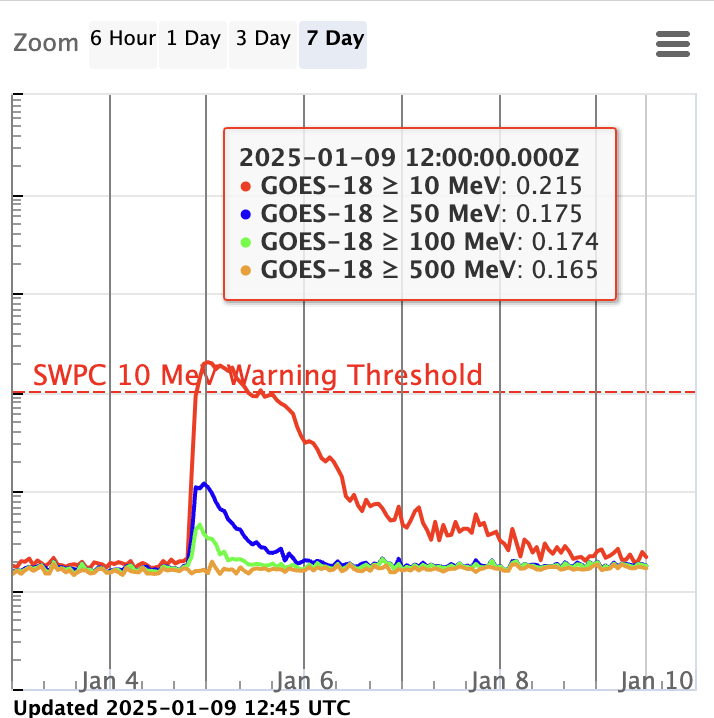

<!-- Title --> ### 宇宙の天気がITインフラに与える影響とその対策 #### 〜太陽が地球のコンピュータを破壊する？〜 --- ### 自己紹介 <div class="profile-container"> <div class="profile-left" data-markdown> * さめ(meg-ssk) * 🧑💻 フリーランスのソフトウェアエンジニア * 得意分野: * 📸 コンピュータビジョン (画像認識/点群処理) * 🌍 空間情報処理 (地理情報/リモートセンシング) * ☁️ クラウドインフラ設計/IaC (AWS, GCP) * [GitHub](https://github.com/s-sasaki-earthsea-wizard) * [YouTube](https://www.youtube.com/@SyotaSasaki-EW) * [Speaker Deck](https://speakerdeck.com/syotasasaki593876) </div> <div class="profile-right"> <img src="assets/images/avatar.png" alt="avatar" height="350px" width="350px"> </div> </div> --- ### 今日のテーマ <div class="highlight-box" data-markdown> * **キャリントンイベント級の大規模太陽嵐の再来を、各国政府や巨大IT企業、宇宙機関は現実的なリスクとしてマジで警戒している** * 今年(2025年)は太陽活動が最も活発になる年！ </div> <img src="assets/images/Magnetosphere_rendition-Big-NASA.jpg" alt="carrington_event" height="375px"> --- ### 今日話すこと <div class="simple-box" data-markdown> * キャリントンイベントとは何か？ * キャリントンイベントのような大規模な太陽嵐が起きた場合、どのような影響があるのか？ * 過去の大規模太陽嵐の事例を紹介 * 太陽活動がなぜITインフラと関係するのか？ * ITエンジニアはどのような対策を取るべきか？ </div> --- ### キャリントンイベントとは？ <div class="simple-box" data-markdown> * 1859年9月2日に起きた観測史上最大規模の太陽嵐 * 天文学者のリチャード・キャリントンが前日の9月1日に世界で初めて太陽フレアを観測 </div> <div class="container"> <div class="col-left"> <img src="assets/images/Carrington_Richard_sunspots_1859.jpg" alt="carrington_event" height="300px"> * キャリントンは太陽黒点から強烈な閃光を観測 </div> <div class="col-right"> <img src="assets/images/CME_of_23_July_2012.jpg" alt="carrington_event" height="300px"> * 2012年7月の太陽嵐の画像 </div> </div> --- ### キャリントンイベントの影響 <div class="simple-box" data-markdown> * 世界各地でオーロラが観測された (日本でも!) * 当時普及しつつあった電信に大規模障害発生 </div> <div class="container"> <div class="col-left"> <img src="assets/images/carrington_event_aurora_in_Japan.jpg" alt="carrington_event" height="350px"> </div> <div class="col-right"> <img src="assets/images/The_Cahaba_Gazette.jpeg" alt="carrington_event" height="200px"> 当時の新聞: <br> _オーロラが輝き電信が使えなくなった..._ </div> </div> --- ### Googleの対策 <div class="simple-box" data-markdown> * Google Cloud「我々の海底ケーブルは太陽嵐から守られている」 * キャリントンイベント級でも耐えられる設計に * 想定される起電力: 800 V * 対策済みサージ電圧: 6000 V </div>  --- ### 宇宙天気と太陽嵐 <div class="simple-box" data-markdown> * 太陽は電気を帯びた巨大なガスの塊 * 太陽フレアやCMEなどの激しい現象 → 宇宙天気 * これらが特に激しい時 → **太陽嵐!** </div> <div class="container"> <div class="col-left">  </div> <div class="col-right">  </div> </div> * NOAAの太陽活動観測データを引用 --- ### ファラデーの法則 <div class="simple-box" data-markdown> * 磁場の変化によって起電力が生じる * コイルのそばで磁石を動かすと豆電球が光る * 太陽嵐の影響で地球の磁場が乱れると... * **地球上の電気機器に異常電圧が発生する!** </div> <img src="assets/images/Faraday-law-of-induction.png" alt="faraday" height="300px"> --- ### 太陽嵐のふたつの脅威: @地上 <div class="simple-box" data-markdown> 1. 地上インフラへの影響 * 送電網での異常な電圧発生 * 変圧器の故障 * 大規模停電の危険 * 通信ネットワークの障害 * 海底ケーブルへの影響 * インターネット接続の不安定化 </div> --- ### 太陽嵐のふたつの脅威: @宇宙 <div class="simple-box" data-markdown> 2. 宇宙インフラへの影響 * 人工衛星の機能障害 * 通信衛星、気象衛星、GNSS衛星... * GNSS（GPS）の精度低下 * カーナビ、船舶、航空機、ドローンに影響 * スターリンクの事例(2022年): 一度に40基喪失! </div> --- ### 歴史的な大規模太陽嵐 <div class="simple-box" data-markdown> * 1859年: キャリントンイベント * 1989年: カナダのケベック州大停電 * 2024年: 現代の高度情報社会に対する警鐘 </div> --- ### 1989年のケベック州大停電 <div class="simple-box" data-markdown> * **太陽嵐がカナダのケベック州で9時間の停電を引き起こした** * 600万人が影響を受けた大規模停電 * 変圧器の連鎖故障で復旧に数週間 * 世界中の電力会社が対策を強化 </div> <img src="assets/images/Quebec_breakout.png" alt="quebec_blackout" height="300px"> --- ### 2024年5月の大規模太陽嵐 <div class="simple-box" data-markdown> * **2024年5月に発生した大規模太陽嵐** * 日本でも各地でオーロラが観測 * 大規模な停電や通信障害は発生せず * 世界中の電力会社や通信事業者の対策の成果 </div> <img src="assets/images/Aomori_aurora.jpg" alt="aurora_2024" height="350px"> --- ### 農業のデジタル化の落とし穴 <div class="simple-box" data-markdown> * GNSS精度低下で自動運転トラクターが使用不能 * トウモロコシの作付けの直前だった... </div> <img src="assets/images/spinoff_johndeere1.png" alt="autonomous_tractor" height="400px">